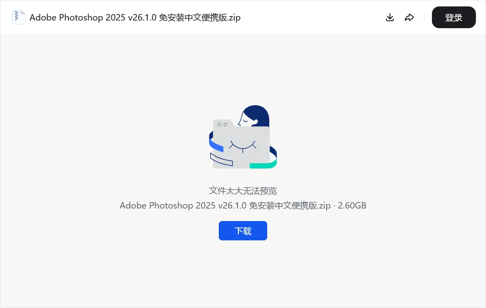

豆包云盘是字节跳动提供的服务，本身不是独立产品，而是豆包的功能之一。
经过测试，豆包云盘的下载速度大约是3.2MB/s，并非网传的不限速，但也足够日常使用了。分享出去的视频、PDF文档和Office文档等可以在线预览，不过Office的在线预览似乎有些问题，偶尔会缺失一些字。
遗憾的是，单个文件最大允许300MB，尝试上传超过这个大小的文件，会提示「文件大小超过上限」。不过，可以把文件分卷打包后再上传。官方没有写出关于总容量的限制，目前也没有查到用户发现有容量上限，大概可以视作无限容量（但使用须知还是提到了「付费扩容服务」，可能是日后会收费，也可能只是免责条款）。
一个较少被宣传，但个人认为很实用的特点是免登录下载——创建分享链接后，任何人点进链接就可以直接下载，不用登录。而且下载页很干净，没有花哨的广告和引导登录的按钮。

经过测试，云盘似乎会对文件名进行审核（拒绝上传文件名包含fuck的文件），但没有审核文件内容（包含敏感词的txt文件上传成功）。
综合来看，豆包云盘免登录下载+速度正常，很适合用来做小文件分发，比如分享软件、文档之类的。文件太大时就不合适了，300MB的限制有点小，分卷打包又会导致文件被切的很碎。
不过毕竟豆包云盘不是独立产品，只是作为豆包的功能之一提供的，日后随时都有可能调整各种限制（2025年时还可以上传大文件，上图2.6GB的压缩包就是这么来的），并不适合用来备份重要资料，相对更适合临时分享。